Alles für dein Klima, Licht, Dünger & Wasser.
GrowCalc bündelt sechs Rechner für Zelt, Gewächshaus und Indoor-Garten in einer App – vom Abluft-Volumenstrom über VPD und DLI bis zur Lichtmessung mit dem Handy-Sensor. Offline, ohne Werbung, mit Dark Mode.
APK herunterladen Quellcode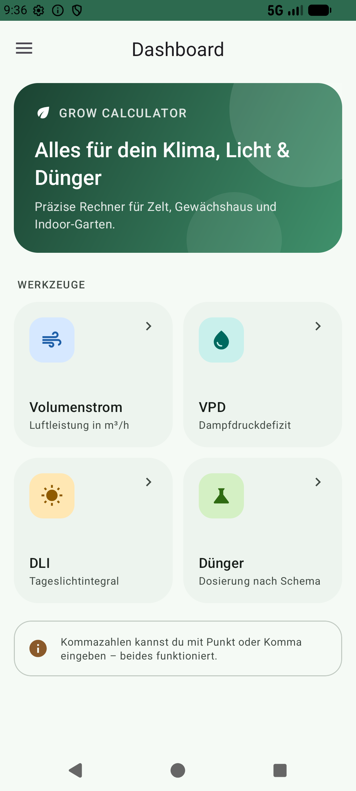
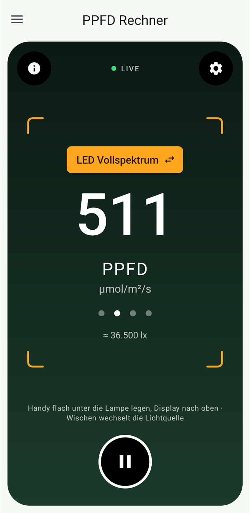
Werkzeuge
Jeder Rechner hat seine eigene Seite und ist direkt vom Dashboard oder über das Seitenmenü erreichbar. Tippe auf eine Kachel, um mehr zu erfahren.
Volumenstrom
Luftleistung in m³/h aus Rohrdurchmesser und Strömungsgeschwindigkeit.
VPD
Dampfdruckdefizit für Luft und Blatt – mit Ampel von „Schimmelgefahr“ bis „Welkgefahr“.
DLI
Tageslichtintegral aus PPFD und Beleuchtungsdauer, mit Schnellwahl 12–24 h.
Dünger-Dosierung
Mengen nach Herstellerschema inkl. Ca:Mg-Korrektur anhand deiner Wasseranalyse.
PPFD-Lichtmesser
Live-Messung mit dem Lichtsensor des Handys, umgerechnet in µmol/m²/s.
Bewässerung
Wassermenge pro Topf aus Tropfern und Laufzeit – inklusive Tagesplan und Tank-Reichweite.
Die Funktionen im Detail
Alle Berechnungen sind transparent dokumentiert und mit Unit-Tests abgesichert. Ergebnisse werden farblich bewertet, damit du auf einen Blick siehst, ob du im grünen Bereich bist.
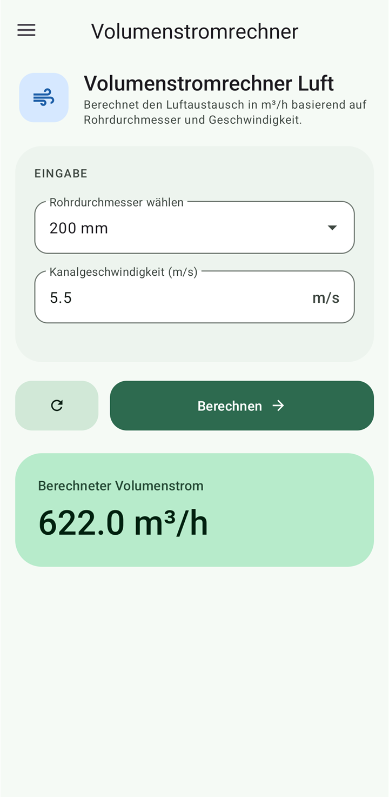
Volumenstromrechner
Wie viel Luft bewegt dein Abluftsystem wirklich? Wähle den Rohrdurchmesser, gib die gemessene Strömungsgeschwindigkeit im Kanal ein (z. B. per Anemometer) und GrowCalc berechnet den Volumenstrom in m³/h. So prüfst du, ob Lüfter und Filter zur Zeltgröße passen und ob die Luft oft genug ausgetauscht wird.
- Gängige Rohrdurchmesser von 125 bis 300 mm zur Auswahl
- Geschwindigkeit in m/s – mit Punkt oder Komma
- Ergebnis sofort in m³/h, ein Tipp setzt alles zurück
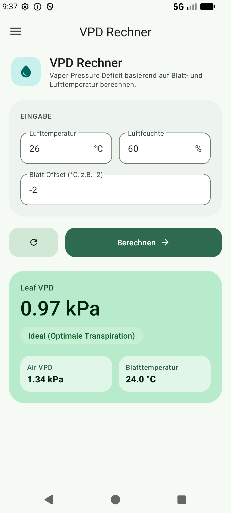
VPD-Rechner
Das Dampfdruckdefizit (Vapor Pressure Deficit) zeigt, wie stark die Luft der Pflanze Wasser „entzieht“ – und ist damit aussagekräftiger als die Luftfeuchte allein. Aus Lufttemperatur, relativer Feuchte und einem optionalen Blatt-Offset berechnet GrowCalc den VPD von Luft und Blatt sowie die Blatttemperatur.
| < 0,4 kPa | Niedrig – Schimmelgefahr |
| 0,4 – 1,2 kPa | Ideal – optimale Transpiration |
| 1,2 – 1,6 kPa | Hoch – Stress |
| > 1,6 kPa | Sehr hoch – Welkgefahr |
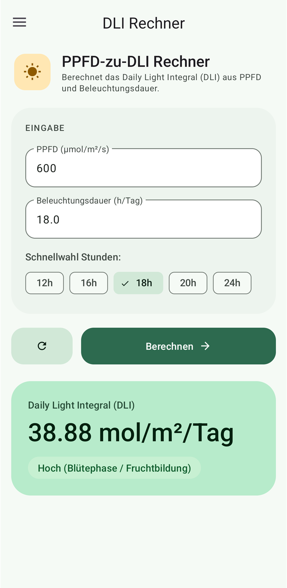
DLI-Rechner
Das Daily Light Integral gibt an, wie viel nutzbares Licht deine Pflanzen über den ganzen Tag bekommen. Gib die Lichtintensität (PPFD) und die Beleuchtungsdauer ein – die Schnellwahl-Chips für 12, 16, 18, 20 und 24 Stunden decken die typischen Lichtzyklen ab. Den PPFD-Wert kannst du direkt mit dem PPFD-Lichtmesser bestimmen.
| < 10 | Niedrig – Schattenpflanzen / Bewurzelung |
| 10 – 20 | Mittel – Wachstumsphase |
| 20 – 40 | Hoch – Blüte / Fruchtbildung |
| > 40 | Sehr hoch – CO₂-Einsatz sinnvoll |
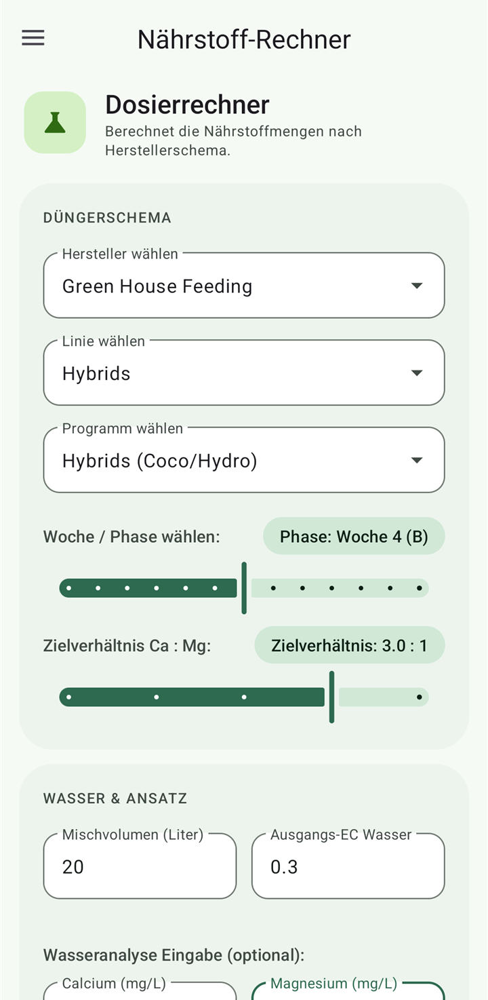
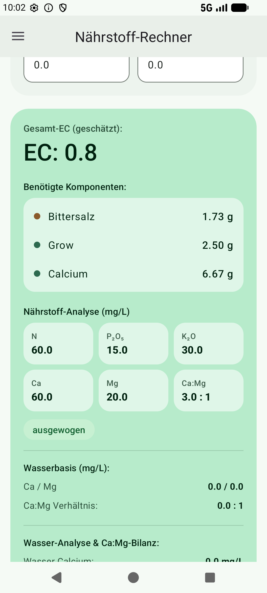
Dosierrechner (Dünger)
Wähle Hersteller, Produktlinie, Programm und die aktuelle Woche – GrowCalc rechnet die Düngermengen für dein Mischvolumen aus und aktualisiert das Ergebnis live bei jeder Änderung. Mit deiner Wasseranalyse (Calcium und Magnesium) wird die Calcium-Gabe so angepasst, dass das gewünschte Ca:Mg-Verhältnis erreicht wird.
- Schemata von Green House Feeding, Athena und Advanced Nutrients
- Wochen-/Phasenregler und Ziel-Verhältnis Ca:Mg (2,0 – 3,5 : 1)
- Berücksichtigt Ausgangs-EC und Ca/Mg aus dem Leitungswasser
- Geschätzter Gesamt-EC und Analyse der Endlösung: N, P₂O₅, K₂O, Ca, Mg in mg/L
- Ergänzt Bittersalz automatisch, wenn zu wenig Magnesium vorhanden ist
PPFD-Lichtmesser
Dein Handy wird zum Lichtmessgerät: Lege es flach unter die Lampe, Display nach oben, und GrowCalc zeigt live die Photonenflussdichte in µmol/m²/s. Der Umgebungslicht-Sensor misst Lux, die App rechnet passend zur gewählten Lichtquelle in PPFD um und glättet den Messwert.
- Lichtquelle per Wischen oder Antippen: Sonne, LED Vollspektrum, HPS, Leuchtstoffröhre
- Großer runder Button zum Halten bzw. Weitermessen
- Warnung, wenn der Sensor übersteuert und der Wert unzuverlässig wird
- Kalibrierfaktor in den Einstellungen – z. B. abgeglichen mit einem echten Quantum-Sensor
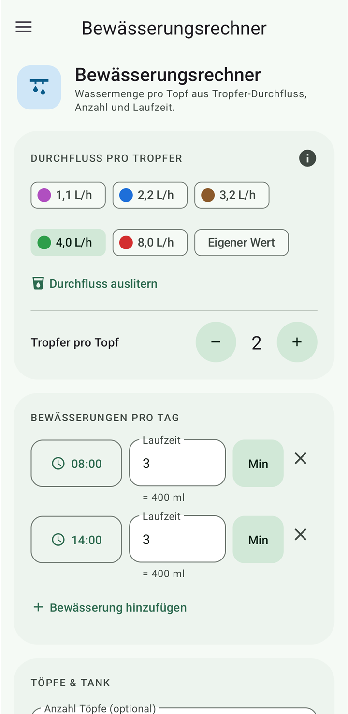
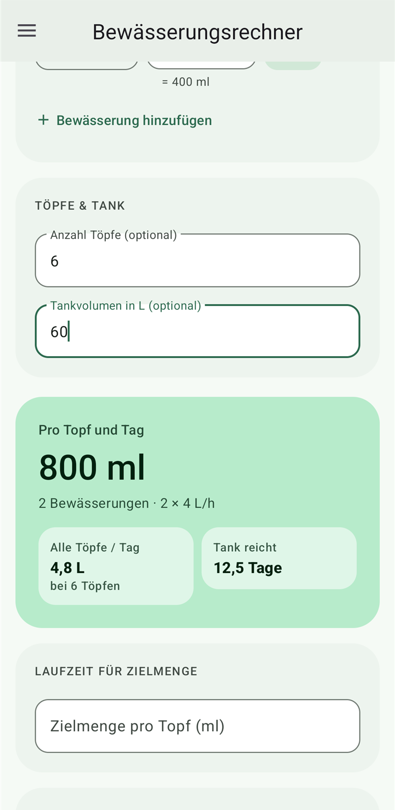
Bewässerungsrechner
Plane deine Tropfbewässerung: Aus dem Durchfluss pro Tropfer, der Anzahl Tropfer pro Topf und der Laufzeit berechnet GrowCalc die Wassermenge pro Topf – für jede einzelne Bewässerung und für den ganzen Tag. Mit Topfanzahl und Tankvolumen siehst du außerdem, wie lange dein Tank reicht.
- Farbcode-Presets für gängige Tropfer (1,1 – 8,0 L/h) oder eigener Wert
- „Durchfluss auslitern“: echten Durchfluss mit dem Messbecher ermitteln
- Mehrere Bewässerungen pro Tag mit Uhrzeit, Laufzeit in Sekunden oder Minuten
- Umkehrmodus: Laufzeit für eine Zielmenge berechnen und direkt übernehmen
- Setups speichern – die letzten Eingaben bleiben erhalten
Galerie
Material-3-Design mit eigenem Farbschema – hell und dunkel. Zum Vergrößern antippen.


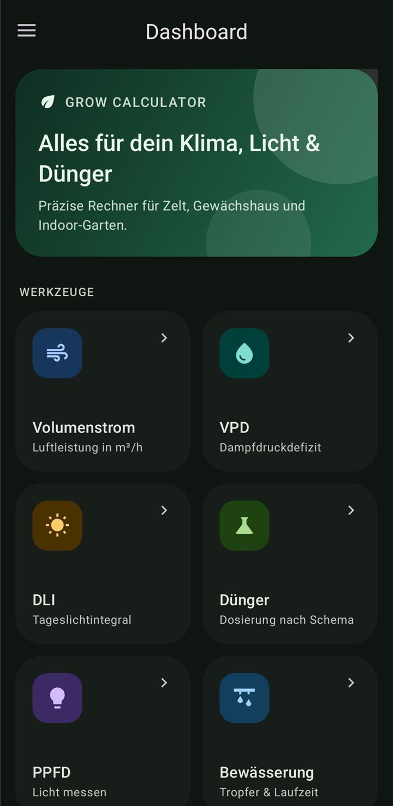

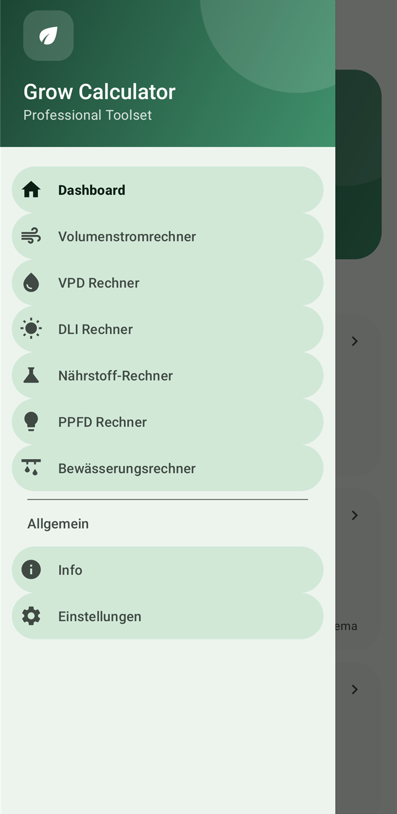


Merkmale
Kleine Dinge, die den Alltag im Growroom leichter machen.
Installation
Voraussetzung: Android 7.0 (API 24) oder neuer.
- Die Datei
GrowCalc-<version>.apkaus den GitHub-Releases auf dem Handy herunterladen. - Datei antippen und beim ersten Mal „Apps aus unbekannten Quellen installieren“ erlauben.
- Installieren und GrowCalc öffnen. Updates installierst du genauso – deine Daten bleiben erhalten.
git clone https://github.com/TheDude1996/GrowCalc.git
cd GrowCalc
./gradlew installDebug # Windows: gradlew.batHäufige Fragen
Wie genau ist die PPFD-Messung mit dem Handy?
Handy-Lichtsensoren messen Lux und sind nicht für Pflanzenlicht gebaut. Die Umrechnung liefert deshalb Richtwerte, die je nach Gerät spürbar abweichen können. Mit dem Kalibrierfaktor in den Einstellungen kannst du die Messung an ein echtes Quantum-Messgerät anpassen. Bei sehr hellem Licht kann der Sensor übersteuern – die App warnt dann.
Welcher VPD-Wert ist der richtige?
Als grobe Orientierung gilt 0,4–0,8 kPa für Stecklinge und junge Pflanzen, 0,8–1,2 kPa für Wachstum und Blüte. GrowCalc bewertet den Blatt-VPD; der Blatt-Offset (meist −1 bis −3 °C) berücksichtigt, dass Blätter kühler sind als die Luft.
Warum ist mein Dünger nicht dabei?
Bisher sind Schemata von Green House Feeding, Athena und Advanced Nutrients hinterlegt. Weitere Hersteller können ergänzt werden – Vorschläge mit Link zum offiziellen Düngeschema gerne als Issue oder Pull Request.
Gibt es GrowCalc auch auf Englisch?
Ja. Seit Version 0.5.0 ist die App auf Deutsch und Englisch verfügbar und richtet sich automatisch nach der Gerätesprache: Deutsche Geräte zeigen Deutsch, alle anderen Englisch. Ab Android 13 lässt sich die Sprache zusätzlich unter Einstellungen → Apps → GrowCalc → Sprache wählen.
Kostet die App etwas oder sammelt sie Daten?
Nein. GrowCalc ist kostenlos, werbefrei und Open Source unter der GPL-3.0. Die App benötigt keine Berechtigungen und hat keinen Internetzugriff.
Gibt es GrowCalc im Play Store oder für iOS?
Aktuell wird die App als APK über GitHub verteilt. Eine iOS-Version ist nicht geplant.